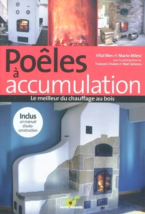
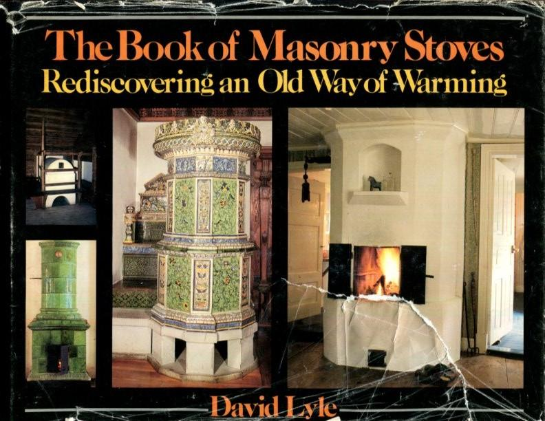
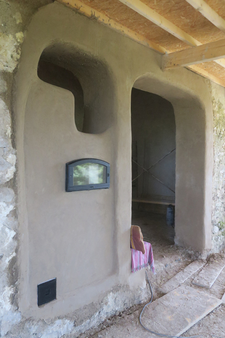
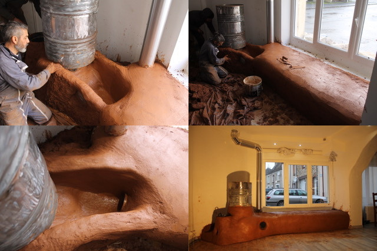
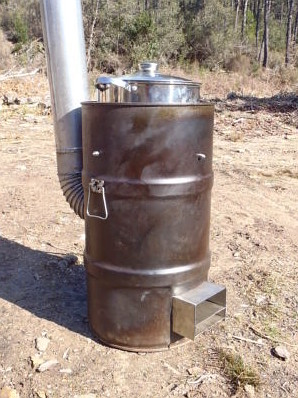

Ressources externes
Plan
Les livres
Poêles à accumulation - Le meilleur du chauffage au bois, Vital Bies et Marie Milesi
-
LA référence pour aborder les poêles de masse.
À la fois synthétique et précis, c'est le livre qui a relancé les poêles de masse en France. Il est le fruit d'un énorme travail de recherche et clarifie beaucoup de notions pour ceux qui voudraient se lancer dans l'aventure.
Attention au plans d'autoconstructions, ceux-ci ont été modifiés depuis la publication du livre. Les modifications sont disponibles sur le blog donné en lien dans le livre.
Une partie de l'énorme travail de Vital Bies est visible ici : MVHabitation, association Dès 2 mains, AFPMA.
Le livre est disponible sur ce lien : Poêles à accumulation : Le meilleur du chauffage au bois
- 
Manuel d'autoconstruction d'OXALIS
LA référence en auto-construction de poêles de masse.
Le manuel et les plans sketchup permettent de construire des poêles de type finlandais (à contre courant). Plusieurs centaines de ces poêles (400 aux dernières nouvelles) ont été construits en France.. pour de bonnes raisons : Les rendements sont bons, le modèle a été extrèmement simplifié par rapport à ce qui faisait auparavant, de très nombreux retours d'expérience leur ont permis de mettre en place un modèle fiable, adapté à l'autoconstruction, à la cuisson avec des bacs Gastronorm.
Quelques petits commentaires de notre coté :
- Nous pensons que ces poêles devraient être construits avec clapets d'obstructions étanches à 5%, ainsi qu'avec des arrivées d'air étanches et refermées systématiquement à la fin de chaque flambée. Sinon les rendements totaux sont à minorer de plusieurs dizaines de pourcents.
- Nos analyses de combustion montrent que ces foyers ont tendance à s'emballer assez rapidement (en dessous de 10-11% d'O2 d'après nos mesures) et à polluer si l'emballement se produit.
- Pour une meilleure durabilité, nous pensons qu'il est très important de maçonner ces foyers avec du coulis silicaté (type REFRACOL 240) plutôt que du coulis argileux (kaolin/chamotte). L'idéal serait peut-être de mettre des feuillards metalliques et des cornières aux arêtes du coeur de chauffe, pour le compresser et éviter que les briques ne bougent sous l'effet des cycles de dilatation/refroidissement.
- Les bancs longs sont source de problèmes de démarrage et n'apportent pas beaucoup de rendement supplémentaire. Si le poêle ne peut pas être placé juste à coté du conduit de cheminée, les dossiers chauffants en cloche avec un clapet de démarrage au bout (en position haute) permettrait d'améliorer le fonctionnement.
Des stages de formation sont organisés tous les mois et permettent d'apprendre à construire trois modèles de même forme mais de puissance différente. Le manuel est disponible sur le site de l'association : oxalis-asso.org/?page_id=3177.
Test de combustion d'un poêle OXALIS 8kW avec four sur le dessus. Source : Association UZUME
The Book of Masonry Stoves, David Lyle, 1984
-
Ouvrage fondamental qui a introduit les poêles de masse aux US. L'approche est historique et l'auteur a fait beaucoup de recherches sur les poêles d'Europe de l'Est, notamment de Russie. Cette mise en perspective permet de comprendre à quel point les poêles de masse ont joué un rôle crucial dans quasiment tous les pays froids du monde.
Les plans de poêles fournis nous montrent l'ingéniosité des anciens poêliers, l'intégration réfléchie des poêles de masse dans le quotidien des habitants de nombreux pays, et permettent d'apercevoir l'énorme saut qualitatif des poêles actuels.
Globalement c'est plutôt un ouvrage de recherche sur les anciennes pratiques car les "nouvelles pratiques" n'existaient pas encore. Les dessins sont parlants, magnifiques. C'est une excellente source d'inspiration pour tout poêlier-pyromane.
Le livre est disponible sur ce lien.
- 
Les sites
Estufas de Inercia
-
Eduardo Marquina est un poêlier espagnol explorant les nombreuses formes permises par des poêles de masse utilisant des cloches. Beaucoup de créativité, des poêles surprenants, bien intégrés, avec différentes techniques d'enduits (Tadelak, Trabadillo, terre, etc..), des sytèmes d'eau chaude sanitaire intégrés aux poêles.
Son site diffuse des informations en Open-source sur les sytèmes d'eau chaude sanitaires, les techniques d'enduits et divers autres sujets liés aux poêles de masse.
Le lien vers son site : estufasdeinercia.wordpress.com
Nous collaborons régulièrement avec lui, c'est un homme très généreux, d'une grande valeur à qui nous devons beaucoup, tant pour l'inspiration que les conseils.
-

Un poêle de masse intégré dans un mur. Source : Eduardo Marquina
À droite, satellite de chauffage à l'étage.
Poêles de masse conçus et construits par Eduardo Marquina. Source : Eduardo Marquina
Kirpichiki
Dans le monde du poêle de masse les poêliers, ingénieurs, inventeurs russes sont véritablement incontournables. C'est une nation entière qui a développé un savoir-faire et un art de vivre toujours vivace autour de leurs poêles de masse. Difficile d'imaginer une maison paysanne russe sans poêle de masse !
Il nous est impossible d'imaginer ce que serait devenus les poêles de masse sans les travaux des russes W.E. Groume-Grimailo, IS. Podgorodnikov, I. Kuznetsov. Les deux premiers pour leur apport technique majeur et le dernier pour la conception et la publication de nombreux modèles de poêles.
Par rapport aux poêles d'Europe de l'Ouest et des États Unis, les poêles russes se caractérisent par leur taille, leur très forte inertie (sûrement liée au climat..), leur multi-fonctionnalité (chauffage, eau chaude, cuisson sur plancha, four à pain, séchoir, fumoir, lit, etc..), l'utilisation de matériaux simples, "low-tech" et de techniques également simples et ingénieuses.
Aujourd'hui, l'équipe de Kirpichiki publie beaucoup d'articles et de photos sur la construction des poêles de masse russes et réalise des poêles avec une maitrise technique incroyable : des briques réfractaires, des double peaux, des armatures seulement là où c'est nécessaire. Une pensée sur le long terme, sur la robustesse.
Quasiment tous leurs poêles sont renforcés par un cadre métallique en cornière. C'est une technique très ingénieuse où le cadre est fabriqué avant le poêle et ce dernier est maçonné à l'intérieur. La fabrication du cadre demande du travail, mais le montage des briques devient très facile et le poêle TRÈS solide ou, comme ils disent : "thermo-intensif".
Le lien de leurs réalisations ici (en Russe) : http://kirpichiki.pro/gallery.html
Numiah Permaculture
-
Des formations sur la construction de Rocket Stoves par un permaculteur au grand coeur et avec une vision très synthètique.
Nous avons organisé plusieurs formations en collaboration avec Bruno Torrente. Les formations permettent de construire des Rocket stoves classiques avec bidons et bancs en bauge. Leur puissance est faible : ils sont à réserver pour des espaces petits ou très bien isolés. Par contre, ils sont très très abordables et faciles à faire en auto-construction.
Le lien ici : numiah.permacultureardeche.fr/services
-

Stage de construction de Rocket Stoves. Source : Bruno Torrente
Association Feufollet
-
Association de pyromanes très engagés et absolument passionnés de combustion du bois et du ré-emploi de matériaux.
Ils organisent des stages de formation autour des Rocket Stoves, des Batchrockets, et des cuiseurs Rocket. Ils organisent aussi la cuisine durant des évènements (festivals, rencontres, etc..). La cuisson est faite uniquement avec différents cuiseurs Rocket qu'ils ont conçu.
Les cuiseurs Rocket sont vraiment excellents à l'usage, les rendements sont hauts, la pollution basse, le travail de bidonnerie et de culottage est soigné.
Ils organisent régulièrement "Les rencontres Pyromaniaques" qui ont permis de créer beaucoup de liens (nous en sommes la preuve !) au sein du réseau des poêles de masse.
Le lien vers leur site : feufollet.org
-

Cuiseur Rocket de 60L construit par Feufollet Source : Association Feufollet
Rocket Stove construit par Feufollet. Source : Association Feufollet